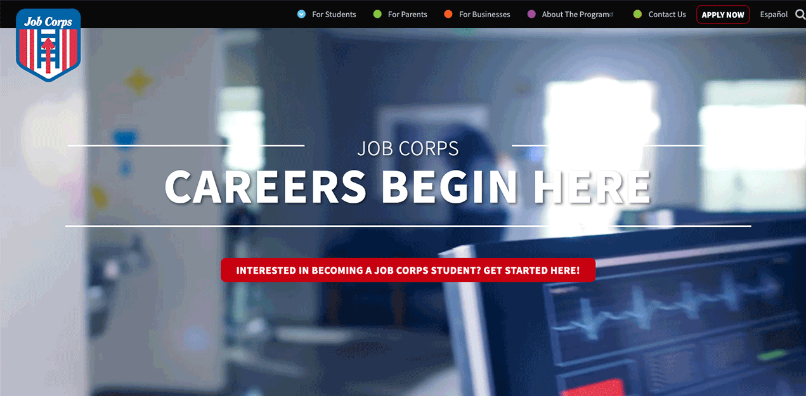

Problem
How might we create more awareness and engagement for the students so that we get more enrollments, provide quick access to information, and inform potential students about possible careers.
Solution
Redesign the Job Corps national and local websites to create a more intuitive enrollment experience, inform potential students on potential careers, and highlight the benefits of Job Corps so that the outcome of higher enrollments is achieved.
Impact
According to enrollment numbers from the Department of Labor, from 2017 to 2018, there was an increase in Job Corps enrollments of 8.14%, after the website redesign launch.